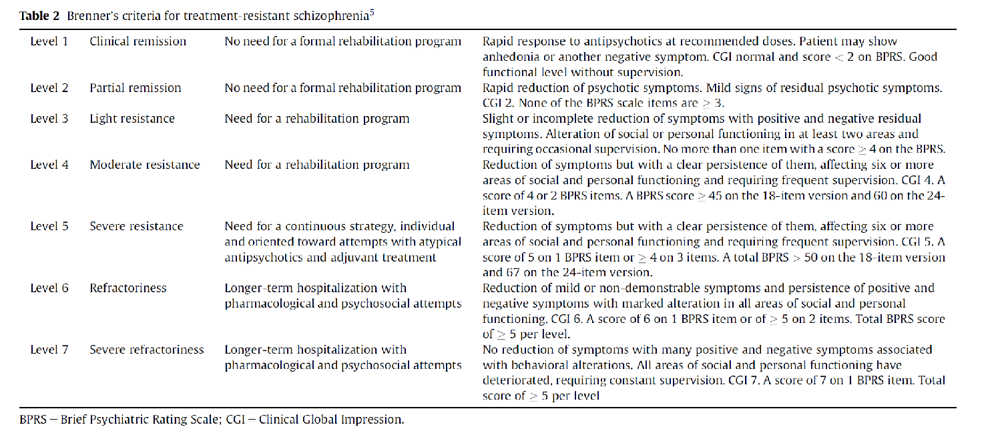

63 치료저항성의 개념
63.1 치료저항성 개념
63.1.1 개념의 역사
충분한 치료에도 불구하고 환자가 회복되지 않는 것을 “치료저항성(treatment resistance)”이라고 한다. 이 개념은 1966년 Itil1에 의해 처음 제기되었다.[1] Itil은 역설적으로 망상과 환각이 두드러지지 않은 환자들이 약물 치료 반응이 좋지 않았고, 결과적인 예후도 나빴다고 관찰하였다. 그는 급성 정신병적 증상은 내적인 병적 과정에 대한 환자의 적극적 방어라고 가정하고, 방어를 제대로 하지 못하는 환자는 치료 결과도 나쁘다는 견해를 내놓았다. Itil이 제시한 치료저항성이라는 용어는 논란을 야기할 소지가 보인다. 왜냐하면 저항이라는 표현이 정신분석에서 사용하는 “저항(resistance)” 개념과 맞물리면서, 치료 실패의 원인을 환자에게 돌리고 있기 때문이다. 설령 환자 탓을 하는 표현이 아니라 하더라도, 한번 치료저항성으로 낙인찍히면, 환자를 위해 더 이상 해줄 수 있는 일이 없다는 부정적인 느낌을 준다.
1 Turan M. Itil (1924~2014): 터키 태생의 정신과 의사로 1964년에는 당시 새로 발족한 미조리 대학 정신건강연구소에서 일하였다. 일찌기 향정신성 의약품이 뇌파에 미치는 영향을 연구해왔고, 이를 이용하여 행동과 뇌파의 관계, 뇌파를 이용한 약물 효능 예측 등에 업적을 남겼다.
게다가 치료 실패를 어떻게 정하느냐는 기준도 분명하지 않다. 암이나 전염성 질환에 있어서 치료 실패 혹은 저항성을 정의하기는 비교적 쉽다. 약물이나 방사선 등 표준적인 치료를 하여도 암세포나 미생물이 증식을 멈추지 않는다면 치료저항성이라 할 수 있을 것이다. 조현병의 경우에는 특징적 증상들이 사라지는 지 여부를 기준으로 삼을 텐데, 문제는 증상을 소실시키는 것과 질병을 성공적으로 치료하는 것이 반드시 일치하지 않는다는 점이다. 의사 입장에서는 증상을 없애는 것까지를 자신의 책임 범위이자 한계라고 선을 긋기 쉽지만, 궁극적인 치료의 목적은 사회로의 복귀와 삶의 질 증진, 나아가 의미있는 삶을 되찾는 것이다. 환자 중에는 증상이 거의 소실된 후에도 사회 적응을 못하는 경우가 있으며, 그 역의 경우도 허다하다. 따라서 치료저항성의 개념 역시, 치료 실패를 어떻게 정의하느냐에 따라 달라질 수 밖에 없다.[2]
63.1.2 치료저항성의 정의
그렇다 해도 치료저항성에 대한 의학적이고 객관적인 기준이 필요했기 때문에 조작적인 정의가 만들어졌고, 그 개념 자체도 이러한 기준에 근거하여 다음어져 왔다. 1980년대 무렵부터 치료저항성은 항정신병 약물을 1) 충분한 용량으로 2) 충분한 기간 사용하였음에도 불구하고 3) 증상이 지속되는 것으로 정의되었다. 이 세가지 요건에 대한 기준은 조금씩 정교화되어왔지만, 그 기본 체계는 크게 바뀌지 않았다.[3]
치료저항성의 정의가 내려지고, 그 개념에 대해 합의가 이루어졌다고 해도 문제점이 사라진 것은 아니다. 정의에 포함되었듯이 약물치료에 한정하여 사용되는 개념이라, 심리사회적 개입 등 다른 치료의 효용을 높게 치지 않는다. 장기간의 예후를 고려하는 것인지, 단기적인 약물 반응을 고려하는 것인지도 분명하지 않다. 지속되는 증상 역시 주로 양성 증상에 초점이 맞춰져 있다.
게다가 근본적인 난제는 치료저항성이 환자의 속성인지, 질병의 속성인지, 아니면 그야말로 환자 개인에 최적화된 치료가 행해지지 못했기 때문인지를 구분하기 힘들다는 점이다. 암이나 전염성 질환의 경우 치료저항성은 큰 논란의 여지없이 질병의 속성으로 치부된다. 그러나 신경발달학적으로 생겨난 조현병의 경우 치료저항성 조현병인지, 치료저항적 환자인지를 구분하기란 쉽지 않다. 혹자는 “난치성 조현병(refractory schizophrenia)”라는 표현을 쓰지만 역시 적절한 용어인지는 의문이다.
63.1.3 가성 치료저항성
더군다나 어떤 환자를 치료 저항적 환자로 낙인찍는 것도 이상적이지 않아 보인다. 동일한 환자라도 약물의 효과가 일정하지 않기 때문에, 관해 상태를 오래 유지하던 환자가 재발한 이후에는 전혀 증상이 잡히지 않기도 한다. 질병 경과가 오래될수록 치료에 반응하지 않는다고 하지만, 어떤 환자는 첫 삽화부터 약물효과가 좋지 않으며, 또 다른 환자는 만성화된 이후에도 새롭게 시도된 약물에 양호한 반응을 보인다. 따라서 임상가는 치료저항성을 환자의 고정된 특성이라고 못 박기보다는, 유동적이고 상황적인 특성이라 여기고, 탄력적으로 치료계획을 수립하는 것이 중요할 것이다. 실제 임상에서는 낮은 순응도[4], 항진된 약물 대사[5], 불충분한 용량이나 치료 기간[6], 약물 상호작용 등 부수적 요인에 의한 “가성 치료저항성 (pseudo-resistance)”을 배제하는 것이 훨씬 중요하다.[7,8]

그럼에도 불구하고, 현대적 치료저항성의 개념은 조현병의 한 아형으로 환자의 고정된 특성이라는 식으로 자리잡았다. 그 원인 역시 유전적 변이를 비롯한 생물학적 특성에서 비롯되는 것으로 믿어진다. 따라서 치료저항성에 대한 조작적 정의도, 연구자의 편의를 위한 임의적 기준이 아니라, 생물학적으로 독특한 일군의 환자를 가려내는 시금석 쯤으로 간주되고 있다.
63.1.4 치료 반응과 치료 실패
약물치료에 대한 반응은 상대적이고 연속적이며 시간에 따라 동적으로 변화하는 것이지만, 실제 임상이나 연구 상황에서는 지극히 임의적인 기준을 적용하여 반응과 미반응을 판별하게 된다.[10] 증상의 미미한 변화는 임상적으로 유의하지 않으며 치료 전 증상의 심각도가 고려되어야 한다는 전제 하에, BPRS 혹은 PANSS 총점이 약물 사용 전에 비해 일정 퍼센트 이상 감소하는 것을 “반응(response)”이라고 정의한다. 이 비율은 임상 연구마다 또는 연구자마다 제각각이지만 대체로 20~50% 사이에서 정해진다. Leucht 등[11]는 적어도 PANSS 총점이 50% 이상 감소해야 반응했다고 볼 수 있으며, 다만 과거 치료저항성 환자에 한하여 이 기준을 25% 이상으로 낮출 수 있다고 하였다. (4장 4-1 참조) 기간적 측면에 있어서, 정신증 치료반응 및 저항성에 대한 연구모임@howes2017은 현 시점에서 가벼운 증상 이하로 적어도 12주 이상 유지되어야 반응군으로 분류할 것을 제안하고 있다.
“관해 (remission)”는 상당한 기간동안 임상적으로 유의한 증상이 없는 상태를 유지하는 것을 말하며, “회복 (recovery)”은 사회적/직업적 기능을 되찾고 궁극적으로 병전 상태로 되돌아가는 것을 의미한다.@leucht2014 회복은 환자들의 주관적 경험을 중시한 개인적 회복(personal recovery)과 임상가의 관점을 반영하는 기능적 회복 (functional recovery) 으로 나누어지기도 한다.[12] 그러나 둘 다 기준이 애매한 주관적 평가이기 때문에 치료저항성을 이야기할 때는 반응과 관해만을 고려한다.
일반적으로 약 30%~40% 조현병 환자들이 치료에 반응하지 않는 것으로 알려져 있다.[13,14]. 병력이 오래되었다고 치료에 저항할 것이라 단정할 수는 없으며, 단지 이상적인 치료를 받지 못했을 수도 있다. 만성 환자라도 적극적으로 치료하면 약 50%의 환자가 치료에 반응하며, 기능면에서도 좋은 결과를 보일 수 있다.[15,16]
63.1.5 치료저항성 환자의 비율
조현병(조현정동 장애 포함)의 예후를 평가한 연구들은, 연구자가 긍정적인 시각을 갖느냐 부정적인 시각을 갖느냐에 따라 매우 상이한 그림을 제시한다.[17] (1장 6-3절 참조) Ram 등이 항정신병 약물 도입 초기의 자료를 분석한 바에 의하면, 환자 중 28%는 한두 차례 삽화 이후 거의 완전히 회복되었고, 50%는 부분 관해를 보였으며, 치료에 반응하지 않아 장기간 입원할 수 밖에 없었던 환자는 22% 정도였다.[18] 약물 이전 시대를 포함한 100년간의 문헌에 대한 메타 분석에서, Hegarty 등은 40%의 환자는 평균 5.6년 후에 증상이 개선되었고, 나머지는 지속된 증상으로 고통받았다고 하였다.[19]
한편 Wiersma 등[20]은 82명의 초발 환자를 그 후 15년에 걸친 추적 관찰한 후, 63%의 환자가 첫 번째 삽화 후 관해에 도달하지 못했으며, 삽화가 반복될 때마다 만성화되는 비율이 증가했다고 보고하였다. 증상의 경감 뿐만 아니라 기능적 회복까지 암격하게 적용한다면, 회복률은 더 떨어질 수 밖에 없다.[21,22] 경과 중 어떤 시점에서 증상적, 기능적으로 회복되었다 해도, 그것이 재발하지 않으리라는 보장은 되지 못한다.[23] 이렇게 따지면 완치되는 환자의 비율은 극히 낮으며, 대부분의 환자가 치료저항성을 보인다고도 볼 수 있다. 물론 지난 20년간 조현병의 치료는 비약적으로 발전하였고, 현시대에서는 이렇게 조현병의 예후를 비관적으로 볼 필요는 없을 것이다. 예를 들어 비교적 최근 연구인 Conus 등[24]에 따르면 661명의 초발 환자를 18 개월간 추적한 결과 63%는 증상의 관해를 보였으며, 사회적 기능 수준에서 관해에 도달한 비율도 44%에 달하였다.
관해 여부 뿐 아니라, 단기간의 치료 반응 비율을 어림잡는 것조차 쉬운 문제가 아니다. Samara 등[25]은 임상연구 자료를 바탕으로, 6천명 이상의 임상시험 참여자에 대해 4~6주 치료에 대한 치료 실패 비율을 조사하였다. 반응의 비율은 치료 실패를 어떻게 정의하였느냐에 따라 크게 달라졌는데, 임상시험 개시 전 PANSS나 BRPS의 25% 이상 감소를 달성하지 못한 것으로 정의한 경우에는 치료 실패 비율이 43%였으며, 50% 이상으로 정의했을 떄는 66.5% 였다. 전반적으로 관해에 이루지 못한 환자의 비율은 무려 66.9%에 달하였다.
이렇게 일관된 수치를 얻지 못하는 상황은, 치료저항성에 대한 조작적인 정의 및 기준이 마련된 후에도 그다지 나아지지 않았다. 평가기준, 평가시기, 대상 환자군의 특성에 따라 그 비율은 천차만별로 적게는 14%에서 많게는 60%까지 보고되었다.[26] 정신병적 증상에만 국한된 기준보다 사회적 기능을 포함한 확장된 기준을 적용했을 때 좀더 비율이 높아질 것이며, 초발 환자보다는 만성 환자에게서, 지역사회 거주 환자보다는 입원 환자에게서 비율이 높게 나타날 것이다. 이렇게 구분하였을 때, 치료저항 환자의 비율은 대체로 만성 환자에서는 45~61%, 초발 환자에서는 14~34%의 비율로 추산된다.[27]
Beck 등[26]은 기능적 수준까지 고려하여 지역 사회에 거주하는 조현병 환자 202명을 평가하였는데, 이중 56%가 치료저항성으로 분류되었다. 이 연구에서 반응군과 저항성 환자군의 연령 차이가 없는 것으로 보아, 만성화 정도는 영향을 끼치지 않은 것으로 보였다. 흥미로운 것은 백인과 유색인에 따른 비율 차이는 없었으나, 치료저항성 환자의 클로자핀 투여 비율은 백인이 훨씬 높았다는 점이다. 이는 치료저항성 환자에 대한 치료의 적극성이 사회문화적 배경에 영향을 받는다는 점을 시사한다.
Wimberley 등[28]은 덴마크의 환자 등록 시스템을 이용하여 대규모 코호트 집단에 대해 비율을 추정하였다. 1996년부터 이후 10년 사이에 조현병으로 진단받았던 8,624명의 환자군에 대하여, 1) 클로자핀 투여, 2) 과거 두 차례 치료에도 불구하고 새롭게 입원함이라는 기준으로 치료저항적 환자를 추출해보았더니, 21%의 환자가 이 기준에 충족되는 것으로 나타났다. 하지만 이 비율은 적극적 치료를 받은 환자만을 포함하기 때문에 수치가 과소평가되었을 가능성이 높다.
치료저항성에 대한 가장 유력한 대책 중 하나가 클로자핀의 투여이지만, 치료저항성 환자 중 절반 가량은 클로자핀에도 증상이 조절되지 않는 초치료저항성(ultra-treatment resistance)을 보인다. 이들이 클로자핀 반응군과 어떤 차이가 있는지에 대해선 아직 이렇다할 연구결과가 없으며, 이들에 대한 임상적 해결방법 역시 연구자들이 해결해야할 시급한 과제이다.[29,30]
63.2 치료저항성의 조작적 정의
63.2.1 Kane의 기준 및 그 변형
치료저항성 개념이 처음 모양을 갖춘 것은 난치성 조현병에 대한 클로자핀의 효과를 입증한 Kane2의 임상연구에서였다.[3] Kane은 지난 5년간 3회 이상 서로 다른 항정신병 약물로 충분히 치료했음에도 불구하고 유의미한 증상이 남아있는 경우를 치료저항성 혹은 난치성이라 정하였다. 여기서 충분히 치료했다는 것은 클로프프로마진 등가 용량으로 하루 1,000mg 이상을 6주 이상 투여한 것을 말하며, 유의미한 증상이란 다음 조건을 만족시키는 것을 말한다.
2 John M. Kane (1945~): 미국의 정신과 의사. 뉴욕 시의 Zucker Hillside 병원에서 일하면서 다수의 대규모 임상 연구의 책임연구자로서 업적을 남겼다. 특히 클로자핀과 장기지속형 주사제 보급에 앞장섰다.
- BPRS의 양성증상 4개 항목(개념적 와해, 망상, 환각, 불신) 중 두 개 이상이 4점 이상
- BPRS-18의 총점이 45점 이상이며, CGI 4점 이상
- 사회/직업적으로 제대로 기능을 발휘한 기간이 없었음
이 연구에서는 기존의 치료가 충분하지 않았을 때를 배재하기 위해, 시험 약제 투여 전에 6주간 할로페리돌을 하루 최대 60mg까지 투여했음에도 BPRS-18 총점 감소의 폭이 20% 미만이어야 한다는 조건이 추가되었다.[31,32]
이 기준은 지나치게 엄격하다는 비판을 받았기 때문에 보다 완화된 기준이 제시되었다. 완화된 기준에 따르면, 서로 다른 두 가지 이상의 약제를 이용하여, 클로르프로마진 등가량 400~600mg을 6주 이상 투여해보았음에도 불구하고 충분한 반응을 보이지 않는 것을 치료저항성이라 한다. Juarez-Reyes 등에 따르면, Kane의 기준을 적용하면 12.9%만이 치료저항성으로 분류되었으나, 완화된 기준을 적용했더니 42.9%가 치료저항성으로 분류되었다.[33]
63.2.2 브레너의 기준
Kane의 정의는 양성 증상에 지나치게 높은 비중을 두었기 때문에, 환자 기능의 다양한 영역을 고려하는 임상 현장에서는 적절치 않다고 지적되었다.[34] 이를 개선하기 위해 Brenner등은 지난 2년 간 서로 다른 종류의 약물로 최소 3회 이상 치료(클로르프로마진 등가량 1,000mg으로 6주 이상) 했음에도 유의한 증상이 남아있다는 기준을 제시하였다. 5년에서 2년으로 관찰기간이 짧아진 것 외에, 약물치료 뿐아니라 심리사회적 치료도 받았을 것을 요구한다는 차이가 있다. 미진한 반응에 대해서도 Kane보다 더 자세하고 포괄적 기준을 제시하였다. 관해에서 중증의 난치성에 이르기까지 7단계로 구분하였고, 정신병적 증상뿐 아니라 사회기능 장애 및 행동 장애까지 고려하여 반응성을 평가하였다.(그림 63.1) [14]

63.2.3 Meltzer의 기준 (1992)
Meltzer는 치료저항성을 증상, 인지 기능, 추체외로 기능, 사회적 기능, 독립성과 업무 기능, 삶의 질, 직업 유지, 복진, 의존, 질병 및 치료 비용 등 다양한 매개 변수로써 평가할 것을 제안하였다. 또한 환자를 치료저항성으로 생각하기 전에 진단, 치료 순응도, 인지행동치료 등 심리사회적 치료, 약물 남용 및 심리 사회적 스트레스 요인에 대해 재평가할 것을 요구하였다.[35] 그의 기준은 덜 엄격하고 임상적으로 유용하여, 이후에 발표된 다양한 임상 지침과 치료 알고리즘에 반영되었다.[34]
63.2.4 TRRIP3 Working Group Consensus Guidelines3 Treatment Response and Resistance in Psychosis (TRRIP)
3 Treatment Response and Resistance in Psychosis (TRRIP)
현재까지 치료저항성을 보이는 환자에 대한 임상 연구들이 다수 진행되었지만, 연구자의 임의적 기준에 따라 서로 다른 잣대를 적용하여 치료저항성이 정의되었기 때문에 연구결과를 종합하거나 비교하기 어려웠다. 이를 통감한 일군의 연구자들이 협력하여 “정신증 치료반응 및 저항성에 대한 연구모임 (TRRIP)”을 결성하였고, 이들은 다양한 치료저항성의 정의 중에서 공통 분모를 모아 통일된 기준을 제시하였다.[6]
이들은 치료저항성을 환자의 특성으로 간주하며, 치료 저항적 환자들은 그렇지 않은 환자에 비해 근본적인 차이점을 보인다는 이분법적 구분을 지지한다. 따라서 정확하게 치료 저항적 환자를 구분해내려면 초발 삽화부터 종적으로 관찰해야 한다고 지적한다. 환자의 증상이 다면적이라는 것을 고려하여, 양성/음성/인지 증상에 대한 치료저항성을 구분하는 것도 권유하였다. 덧붙여, 현재의 치료저항성은 “도파민 수용체 차단제에 대한 치료저항성”에 지나지 않으며, 다른 치료법이 등장하면 개념이 바뀔 수 있다는 것도 부언하고 있다.
TRRIP 에서는 치료저항성 조현병을 아래 표와 같이 정의하고 있다. 최소 기준(minimum requirement)과 최적 기준(optimum requirement)을 나눈 것이 특색인데, 이는 실제 임상에서는 정보가 불충분하고, 환자나 보호자의 기억 편향(recall bias) 때문에 얻은 정보조차 신뢰하기 어렵다는 것을 반영한 부분이다. 따라서 임상 연구와 같이 양질의 자료를 얻을 수 있을 때는 최적 기준을, 진료 상황에서와 같이 그렇지 못할 때는 최소 기준을 적용하라고 권하고 있다.
기준을 간략히 살펴보면, 치료 반응을 평가할 때는 PANSS, BRPS, SANS, SAPS와 같은 표준화된 평가 도구를 이용해야 한다. 치료 전에 비해 호전의 폭이 20% 미만이고, 중등도 이상의 증상을 지속적으로 보일 때를 치료 반응이 불충분한 것으로 본다. 이러한 미반응 상태는 12주 이상 지속되어야 하며, 증상의 지속은 SOFAS 등으로 평가된 직업적/사회적기능의 저하와 동반되어야 한다.
충분한 치료에 대해서는 클로르프로마진 등가 용량 600mg 이상으로 최소 2가지 이상의 항정신병 약물을 각각 6주 이상 시도해보았어야 한다. 여기서 6주는 치료 유효 용량을 의미하므로, 용량 적정에 필요했던 기간은 포함시키지 않는다. 순응도를 고려하기 위해 적어도 두 차례 이상 혈중 농도를 측정하여 최소 유효 농도 이상임이 확인되어야 한다. 특이한 것은 2가지 이상의 항정신병 약물 중 적어도 하나는 장기지속형 주사제여야 한다는 점이다. 주사제는 적어도 4개월 이상 투여해보았을 것을 명시하고 있다.

63.3 치료저항성의 원인
63.3.1 조현병의 아형으로서의 치료저항성 조현병
조현병은 그 원인 및 임상 양상, 경과, 치료 반응이 모두 다른 이질적 질환들이 모여있는 질병군이다. 일부 학자들은 조현병의 치료 반응이 너무나 다양한 요인에 의해 결정되기 때문에 그 결과는 연속선상에 위치할 수 밖에 없고 (중심극한의 정리 2장 1-1 참조), 이를 치료 반응성/저항성으로 나누는 것은 인위적인 구분일 뿐이라고 보고 있다.[36] 이에 반해 또 다른 학자들은 치료저항성 조현병 혹은 환자들은 근본적으로 다른 병태생리를 갖는 환자이기 때문에 이분법적 구분이 타당하다고 여긴다.[37–39] 이 환자들은, 유전적, 발달학적, 생물학적, 문화적 요인 등 다양한 요인들에 의해 애초부터 치료에 잘 반응하지 않도록 결정되어 있다는 견해이다.[38,40,41]
한동안 연구자들은 음성 증상을 주로 보이며 만성화되어 더 이상 사회적응을 하지 못하는 환자들을 치료저항성 환자로 보아왔다. 예를 들어 Crow[42]는 뇌의 기질적 이상 및 임상 증상에 기초하여 조현병을 I형과 II형으로 분류하였다. (1장 4-4-1절 참조) 이에 따르면 음성 증상의 비중이 큰 II형은 상대적으로 치료에 반응하지 않는다. 사실 항정신병 약물은 주로 양성 증상을 개선하기 때문에, 음성 증상이 잘 호전되지 않는 것을 환자 탓으로 돌려야 할 지, 약물 탓으로 돌려야 할 지는 애매하다. 게다가 음성 증상을 중심으로 치료저항성을 구분하려면, 좀더 세심한 평가가 필요하다. Pogue-Geile과 Harrow는 음성 증상을 질병과정의 직접적 결과인 것(A형)과 투병 중 대처과정에서 발생한 2차적 증상(B형)으로 나누고, 후자는 치료저항성 고려에서 제외해야 한다고 보았다.[43]
Carpenter의 결핍 조현병(deficit schizophrenia) 역시 근본적으로 치료가 잘 안 되는 조현병의 한 아형으로 제시되었다.[44] (1장 4-4-1절 참조) 단 그는 치료되기 어려운 일차적 결핍 증상과 개선시킬 수 있는 이차적 결핍 증상을 구분하였다. 후자는 사회적 상호작용, 정동 및 동기, 심리사회적 지지 등의 영향을 받는 것으로, 약물에 대한 치료저항성과는 직접 관계가 없다.[45] 하지만 일차적 결핍 증상을 주로 보이는 환자라면 치료저항성을 보일 것이다.
그러나 최근 경향은 음성 증상의 비중과는 상관없이 양성 증상 자체가 듣지 않은 경우를 치료저항성이라고 한다. 궁극적으로 예후가 안 좋은 것과, 치료에 대한 반응이 나쁜 것을 개념적으로 분리하고자 하는 것이다.
63.3.2 질병 단계와 치료 저항성
치료저항성 조현병을 독립적인 아형으로 간주하기 위해선, 이 성질이 질병 단계와는 비교적 독립적이어야 하며, 발병 초기부터 분명히 나타나야 할 것이다. 분명 그러한 면이 없는 것이 아니지만, 쉽사리 결론짓기 어려운 부분이 많다. 발병 초기에 이미 치료저항성 환자를 알아볼 수 있다는 견해는 크레펠린으로 거슬러 올라간다. 그는 약 1/3의 환자들이 발병한지 채 1년도 지나지 않아 비가역적인 퇴행 상태에 도달한다고 하였다.[46] 항정신병 약물이 도입된 이후에도 학자들의 공통된 견해는 약물에 반응이 나쁜 환자들은 치료 초기부터 잘 듣지 않는다는 것이었다. 최근의 연구에 따르면, 초발 환자 중 14~34%에서 치료저항성이 관찰되며, 궁극적으로 치료저항성 환자로 분류되는 환자의 80% 이상이 질병 초기부터 치료저항성을 보였다고 한다.[47,48]
그러나 이에 못지 않게, 재발이 반복되고 질병이 만성화될 수록 치료 반응이 좋지 않다는 주장도 만만치 않다. 신경퇴행적 가설에 따르면 조현병은 뇌의 구조적/기능적 퇴행이 멈추지 않는 진행성 질환이며, 적극적으로 치료하여 이를 최대한 막지 않으면 점점 돌이킬 수 없는 퇴행상태로 접어든다.(2장 4-1절 참조) 이러한 퇴행은 치료 반응에도 반영되어, 질병 단계가 깊어질 수록 약물 용량이 늘어나며, 다약제 사용 비중이 커지고, 관해에 도달할 가능성이 떨어진다.@emsley2013; @takeuchi2018 초발 삽화일 때의 약물반응 비율은 70~80%에 이르며 관해 비율도 60% 가까이에 이르지만[49], 이 환자들이 점차 질병 경과를 밟아가다보면 최종적으로 20-30% 정도는 어떤 치료에도 반응하지 않고, 30% 정도는 부분적인 반응만을 보인다.[50] 관해에 이르는 시간이 길어질 뿐 아니라 아예 관해 자체에 도달하기 어려워진다는 것이다.[51,52] 일부 학자는 항정신병 약물을 오래 사용하여 초래되는 도파민 초과민성(supersensitivity)이 치료저항성의 원인이라고 주장한다. 이는 치료저항적 환자가 따로 있다는 견해에 정면으로 배치되는 것이다.[53]
이와는 대조적으로 일부 환자들은 젊었을 때는 치료저항성을 보이다가 나이가 든 후에 자연적인 관해에 이르거나, 약물에 새삼스레 반응하기 시작하는 경우도 있다.[50] 일반적으로 나이든 조현병 환자는 젊은 환자에 비해 항정신병 약물의 유지용량이 낮아지는데[54], 이는 도파민 신호전달이 나이가 듦에 따라 감소되는 현상으로 설명할 수 있어보인다. [55,56]
63.3.3 치료 저항성의 신경생물학적 기반
최근의 학자들은 음성 증상을 중시한 과거의 개념에서 벗어나, 양성 증상 자체도 치료에 잘 반응하지 않는 환자들에 주목하고 있다. 현행 기준으로는 상당 기간에 걸쳐 치료 시도와 실패를 반복한 후에야 치료 저항성 판정을 내리도록 되어있는데, 현대의 학자들은 이 기간을 최대한 단축시키기를 염원하고 있다. 왜냐하면 초발 삽화에서도 이미 치료 저항성을 보이는 환자가 있기 때문에, 이들을 한시라도 빨리 찾아내어 클로자핀이나 전기경련치료 등 좀더 공격적인 치료를 하는 것이 바람직하기 때문이다.
이러한 염원이 가능해지려면, 시행착오를 통해 치료 저항성을 판정하는 것이 아니라, 생물학적 특성을 기반으로 치료 저항 환자를 구분할 수 있어야 한다. 현재 언급되는 치료 저항성의 원인으로는 도파민 수용체의 초과민성 상태(supersensitivity) 혹은 저활성 상태가 있으며, 이외에도 글루타메이트 신호전달계 등 기타 시스템의 문제가 언급된다.[9,57]
도파민 수용체 초과민성은 장기간에 걸친 도파민 수용체 차단제 투여에 의한 부작용으로 여겨지며, 금단 정신병(withdrawal psychosis) 및 지연운동장애(tardive dyskinesia)의 원인으로 생각되기도 한다. 인간에게서는 아직 확증을 얻지 못했지만, 동물모델에서는 반복적으로 증명되었다.[58,59] 초반에는 약물에 잘 반응하던 환자가 점점 더 필요한 용량이 증가하며, 갑자기 약을 중단한 경우 급격하게 재발한다. 이는 도파민 수용체 차단에 대한 반작용으로 수용체의 수가 급증하거나 민감도가 증가한 경우로, 약물 내성의 주요한 원인이기도 하다. 한 연구에 따르면 치료 저항성을 보이는 환자의 70% 가까이에서 도파민 초과민성의 특성을 발견할 수 있다고도 한다.[53] 주목할 점은 장기지속형 주사제처럼 안정적으로 도파민 수용체를 차단하는 약물을 쓰면, 이런 환자들에게 긍정적 효과를 얻어낼 수 있다는 것이다.[60]
항정신병 약물에 잘 반응하는 초발 환자들은 대부분 선조체의 도파민 활성이 증가되어 있다. 그러나 일군의 환자들은 약물을 사용하기 전에도 선조체 도파민 생성역량이나 활성이 떨어져 있는 데, 이들은 유달리 치료 저항성을 보인다고 한다.[61] 권준수가 이끄는 국내 연구진은 [18F ]DOPA PET를 이용하여 치료 저항성 환자들의 선조체 도파민 농도를 조사해왔는데, 치료 저항성 환자 들은 정상 대조군 및 치료 반응군에 비해 도파민 농도가 유의하게 떨어지며, 전두엽과 선조체 간의 기능적 연결(functional connectivity) 또한 유의하게 떨어진다는 것이 발견되었다,[62,63] 이러한 차이는 약물 투여력과 상관없이 초발 환자에서도 입증되기 때문에, 치료 저항성 환자가 독립된 아형이라는 가설을 지지하고 있다.[64]
유전적 요인 또한 무시할 수 없다. 도파민 혹은 세로토닌 수용체의 특정 변이와 치료저항성이 연관되어 있다고 하며[65], catechol-O-methyltransferase (COMT)의 변이와의 연관성도 발견되었다.[66]. 신생 돌연변이(de novo mutation)(2장 2-1절) 및 유전자 복제수 변이(2장 3-2절 article-02-03.html#.neurodevelopment-evidence)와도 관계되는데, 이들 지표는 전반적인 유전체의 불안정성4을 반영한다. NMDA 수용체 유전자의 특정 변이 또한 치료저항성과 연관이 있다.[67]
4 유전체 불안정성 (genome instability): 일정한 크기의 유전체 내에 돌연변이가 발생하는 비율. 암 발현 및 다양한 신경퇴행성 질환과 연관이 있다.
NMDA 수용체 이상은 조현병의 글루타메이트 가설과도 연결된다. 치료저항적 환자는 전측 대상회(anterior cingulate gyrus)의 글루타메이트 농도가 높다고 하며[68], 글루타메이트의 전구물질과 대사물질을 모두 포함하는 Glx5 농도 자체가 다양한 뇌부위에서 차이가 난다는 보고도 있다.@goldstein2015
5 Glutamate-Glutamine (Glx)
뇌의 구조적 변화 역시 치료저항성 환자를 찾아내는 한가지 수단이 될 수 있다. 구조적 변화는 전통적으로 나쁜 예후와 연관되는 것으로 여겨져 왔는데, 연구가 거듭될수록 초발 당시부터 구조적 변화가 두드러진 환자가 있다는 것이 분명해졌다. 이러한 환자들은 빈번하게 치료저항성을 보이는데, 발병 초기부터 전체적인 회백질 용적이 감소해있거나, 배외측 전전두엽 등 특정 부위의 용적이 감소된 것이 보고되었다.[69,69] 그러나 치료저항성에 대한 정의나, 뇌영상학적 기법 등이 통일되지 못하는 등 방법론상의 한계때문인지, 메타 분석에서는 뇌영상학적 변화와 치료저항성 사이에 유의한 연관관계가 발견하지 않았다.[70] 이 영역은 여전히 향후 많은 연구가 필요한 분야이다.
63.4 치료저항성 조현병의 사회적 부담
치료저항성 조현병은 환자, 가족, 치료진 모두에게 상당한 부담이 된다.[71] 치료반응성 환자에 비해 음성/인지 증상이 더 심하고, 기능적 저하가 크며, 더 많은 치료비를 필요로 하고 삶의 질 또한 저하된다.[[72] 치료 실패를 반복적으로 경험하면서 좌절, 낙담하며, 물질남용의 빈도가 높고 과격한 행동이나 자살 시도도 늘어난다.[73,74] 동시에 물질 남용이 빈도가 높고, 과격한 행동이나 자살시도도 더 많다. 치료진은 비관적, 허무적이 되기 쉽고, 현상 유지에 급급하여 도전적 치료를 행하지 않는다.[75,76] 가족들 역시 상당한 시간과 경제적 비용을 환자에게 투자해야 하고, 이로 인해 가족 구성원이 직업을 잃거나 스트레스 관련 질환을 얻기도 하고, 가족 내 응집력이 떨어져 불화가 싹트기도 한다.[77]
이러한 장기적 예후에 대해 익히 알고 있기에 정신과 의사 역시 회복가능성에 대해 부정적으로 바라보기 쉽상이다. 초발 환자인 경우에는, 환자에게 완전한 회복이라는 이상적인 미래상을 그려주면서 적극적으로 격려하다가도, 잦은 재발과 치료저항성에 맞부딪히게 되면 오히려 좌절감과 분노를 환자에게 투사하여 환자를 비난하곤 한다. 환자 역시 달라진 의사의 태도에 당혹스러워하면서, 자신의 상태가 여기서 더 나아지지 않을 것이라며 자포자기에 빠져든다. 치료저항성 환자라도 여전히 의사가 돌봐야 한다는 사실은 변하지 않는다. 의사의 태도가 이렇게 극에서 극으로 변한다면, 환자들은 자신들이 더 이상 관심을 받지 못한다는 것을 알아차릴 것이다. 환자 상태가 점진적으로 나빠진다면, 그에 맞추어 치료 목표를 조금씩 수정해가면서, 현실적이면서도 도달 가능성을 품고 있는 밝은 미래의 모습을 제시해줄 수 있어야 한다. 가족들 역시 마찬가지이다. 초반에는 모든 자원을 총동원하여 환자의 치료를 돕다가도, 만성화되기 시작하면 환자와의 접촉을 꺼려하고 치료에 드는 비용을 부담스러워해서는 안된다. 치료저항성 환자를 돌보아야 하는 가족들은 환자들의 지속적인 초조, 적대감, 망상, 의심, 피해의식을 감내할 수 있으면서, 동시에 그들이 스트레스를 잘 견디고 적응할 수 있도록 도와줄 수 있는 역량을 키워야 한다.